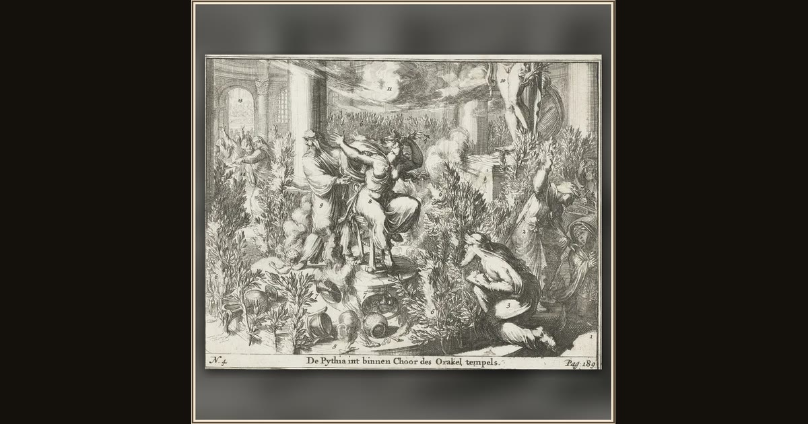

Priesteres Pythia in de tempel van Delphi
attributed to Romeyn de Hooghe · 1687 · rijksmuseum
The Pythia sits on a tripod among branches and smoke in a crowded temple; Ion describes the Delphian priestess on Apollo's holy tripod (90–94). Explore its place in Euripides's Plays, Ion, line 90.